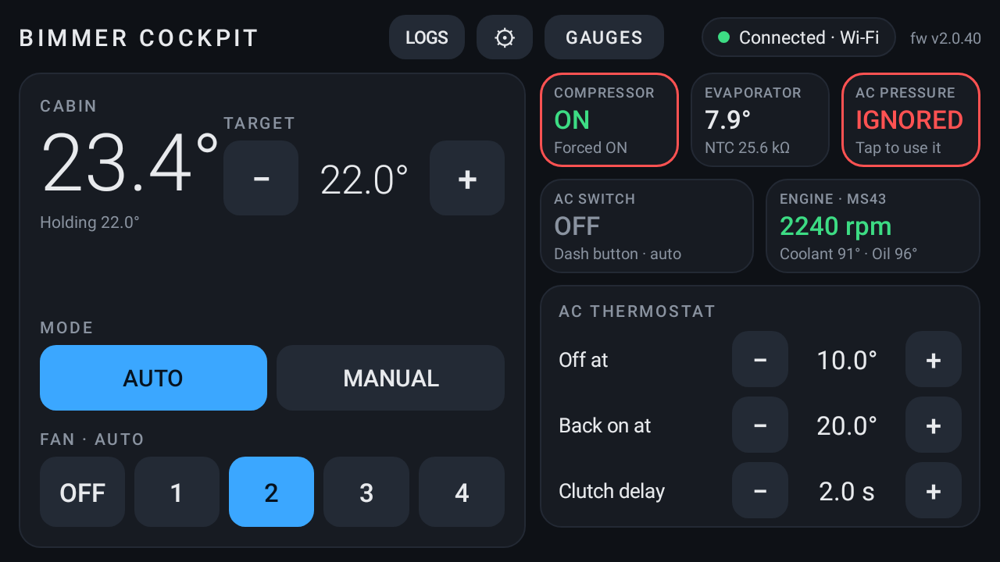
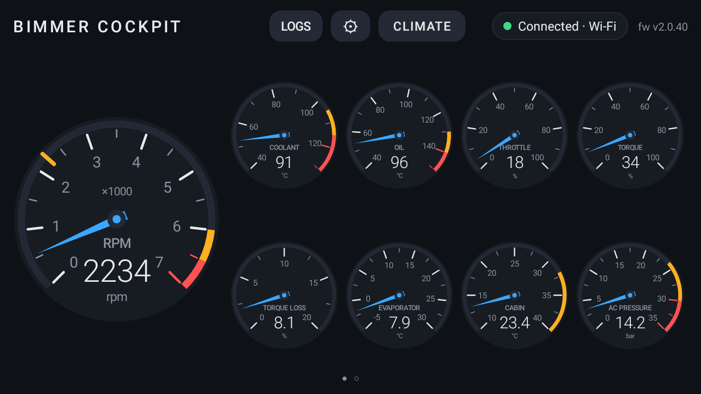
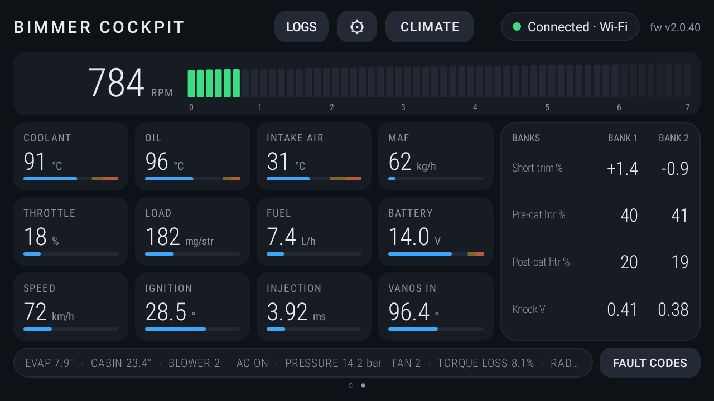
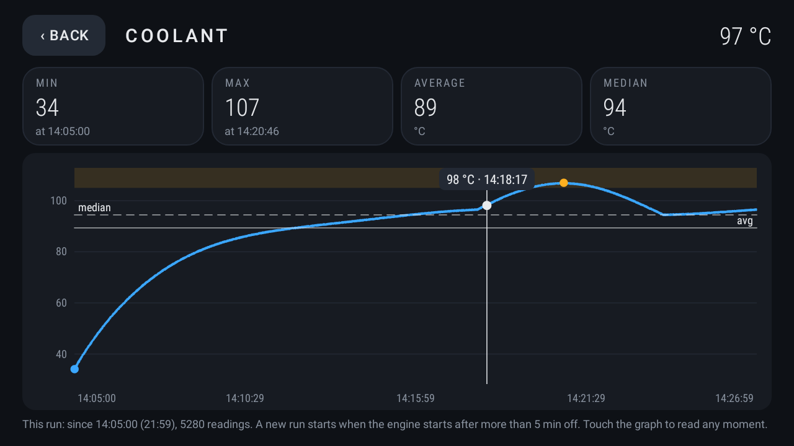
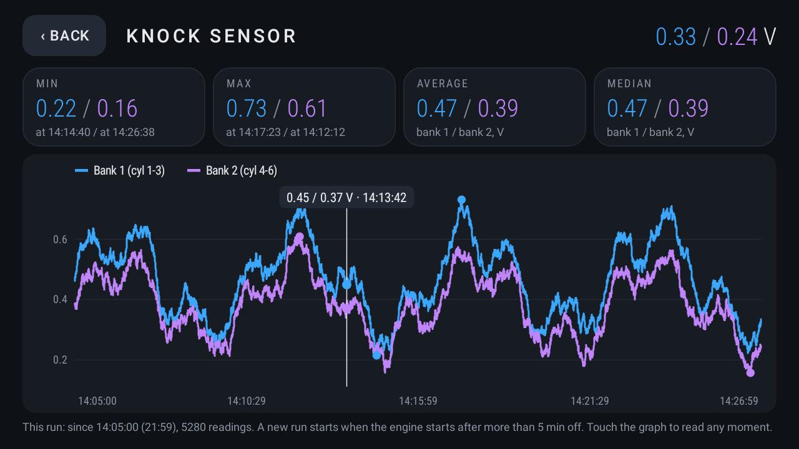
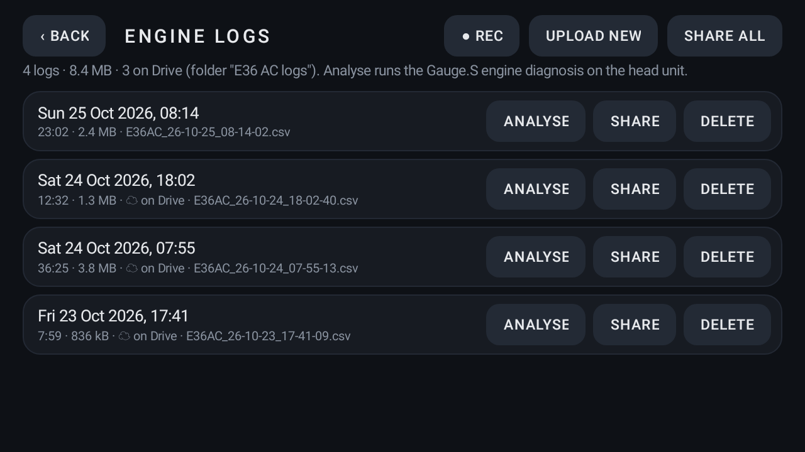
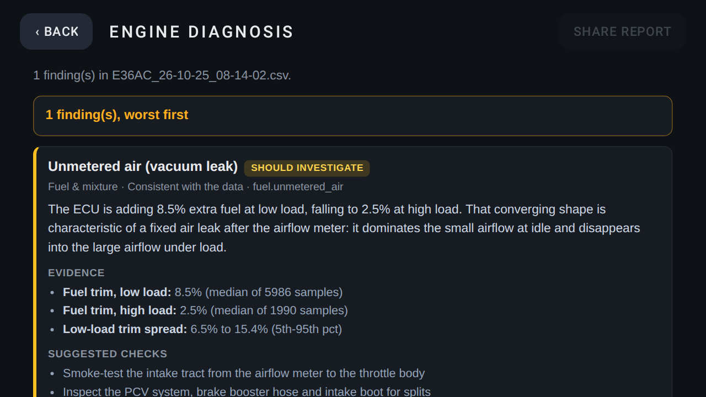
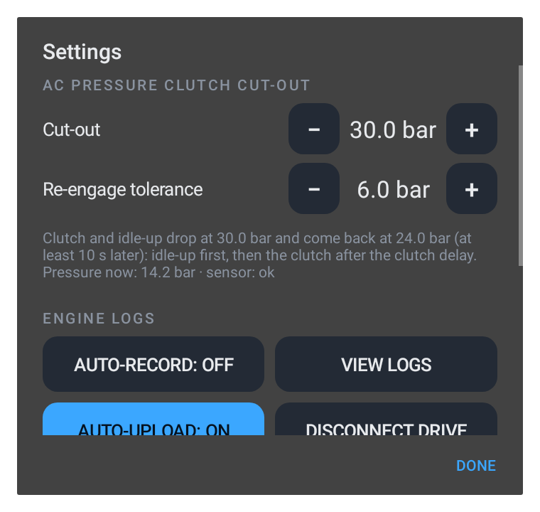

The cockpit your MS43 was missing
The Bimmer Cockpit module behind the dash connects your MS43 to the Android head unit: automatic climate control for M54 swaps, live engine gauges, fault codes, and engine logs with an on-board diagnosis. Built for MS43-powered BMW E-series cars, developed on an M54B30-swapped E36.
- MS43 · M54
- CAN
- K-line
- USB
- Android 10+
Everything in one module
The module does the work on its own; the app on the head unit is the display and the settings. The climate features are for M54/MS43 swaps into cars whose climate control and cluster don't talk CAN (E30, E36, Z3 …); gauges, fault codes, logging and diagnosis work with any MS43.
Automatic climate
Holds the cabin at a target temperature: runs the compressor on two thermostats and picks the blower speed, 1 to 4.
Idle-up over CAN
Asks the MS43 to raise the idle before the compressor engages, the same CAN message an E46 cluster sends.
Compressor protection
Freeze guard on the evaporator and refrigerant-pressure cut-outs for an empty or over-pressured system.
Live MS43 gauges
Tachometer, temperatures, MAF, ignition, fuel trims, VANOS and more, streamed 30 times a second over USB.
Cluster warning lamps
Lights the old cluster's CHECK ENGINE and EML lamps from the MS43, with a bulb check at key-on.
Fault codes
Reads and clears the MS43 fault memory over the K-line, straight from the app, and saves the learned fuel and octane adaptations with the faults for the diagnosis.
Engine logging
Records K-line and CAN engine data with the AC state as CSV, automatically every time the engine runs.
On-board diagnosis
Analyses each log on the head unit with the Gauge.S analyser: likely faults ranked worst first, with evidence, backed by the ECU's own stored faults and adaptations, and compared with your earlier drives.
Google Drive upload
Finished logs and ECU data go to an “Bimmer Cockpit logs” folder in your Drive, including those recorded while offline.

Set a temperature and drive
A dark, landscape dashboard with big touch keys, made for the head unit.
- Auto: the fan speeds up the further the cabin is above the target and settles as it cools down.
- Manual: pick the fan speed yourself, with or without AC.
- Status at a glance: compressor state and the reason it's off, evaporator temperature, refrigerant pressure, AC switch and engine.
- Overrides: tap the AC switch or Compressor tile to force it on or off. Overridden tiles get a red border; the safety cut-outs still apply.
- Thermostat settings: the evaporator off / back-on temperatures and the clutch delay.




Live engine data
GAUGES switches the screen to a tuner-style view; swipe left for the digital page.
- Analog page: a big tachometer with peak hold, plus coolant, oil, throttle, torque, torque loss, evaporator, cabin and AC pressure.
- Digital page: an RPM bar with shift light, tiles with history lines, and bank 1 / bank 2 trims, O2 heaters and knock sensors.
- Tap for the whole run: tap any gauge or tile for a graph of the current run with its min and max (and when they happened), average and median. Touch the graph to read any moment. The run starts with the engine, and the app keeps it in the background.
- Both banks: tap a row of the bank panel for short-term trim, O2 heaters or knock sensors, with bank 1 and bank 2 on one graph.
- CAN and K-line: CAN data comes straight from the MS43. The K-line values are decoded from the MS43's replies to a Gauge S, so both can be used at once.


Record, analyse, keep
Every drive can be logged and checked for faults, without a laptop.
- Auto-record: a log starts with the engine and ends 15 s after it stops. LOGS in the top bar shows
● RECwhile recording. - Gauge.S format: the columns use the names the Gauge.S log analyser understands, and the AC state comes along.
- Analyse: runs the Gauge.S engine diagnosis on the head unit, offline. You get likely faults ranked worst first with their evidence, suggested checks, and the time spent in each operating state.
- ECU data: Fault codes → Read ECU data saves the stored faults with the learned fuel and octane adaptations, dated. The diagnosis uses the one taken nearest each drive: stored misfires by cylinder, codes that back up a finding, and a leak the ECU has already learned around.
- Earlier drives: each analysis is kept as a few numbers, and later drives are compared with them, so idle trim creeping or idle speed changing shows up before any fixed limit trips.
- Google Drive: connect once, and finished logs upload to an “Bimmer Cockpit logs” folder. The app can only see the files it created.
- Share: send a log or a diagnosis report to any app.
The diagnosis shown here is from a generated sample log with a vacuum leak injected, not a real drive.

Update the module from the app
The less-used settings live under ⚙.
- Firmware updates over USB: each app release carries the matching module firmware. Tap Update module and the module flashes its spare slot, checks it and restarts. If anything fails, it keeps the old firmware.
- Board-safe: firmware only installs on the board revision it was built for.
- AC pressure cut-out: set the cut-out pressure and the re-engage tolerance.
- USB first, Wi-Fi as a fallback: over the USB cable the head unit's Wi-Fi stays free for wireless Android Auto. A phone can join the module's hidden Wi-Fi instead.
The Bimmer Cockpit module
A compact module behind the dash. It plugs into the car's wiring and into a USB port on the head unit.
Car harness
Ignition +12 V and ground, CAN-H / CAN-L to the MS43, the K-line (OBD diagnostic line), the AC switch input, the AC compressor clutch relay, and the cluster's CHECK ENGINE and EML lamps.
Blower relays
Four blower speed outputs and a +12 V feed for the relays. They take over from the original fan speed switch.
Sensors
Evaporator temperature, cabin temperature and the AC refrigerant pressure sensor on the receiver-dryer.
USB to the head unit
One cable powers the module and carries the data. A phone can connect over the module's own Wi-Fi instead.
Status light
Shows the AC state at a glance: steady when the compressor runs, slow blink at idle-up, fast blink for a fault.
Updates from the app
The app carries the module's latest firmware and installs it over USB, so the module stays in the dash.
Install
The app is in testing on Google Play and works with the Bimmer Cockpit module fitted to the car.
Fit the module
The Bimmer Cockpit module goes behind the dash and plugs into the car's wiring: CAN and K-line to the MS43, the AC switch and sensors, the blower and clutch relays, and the cluster lamps.
Install the app
Install Bimmer Cockpit on the head unit (Android 10 or later) and plug the module into a USB port. A phone can connect over the module's Wi-Fi instead.
Drive
Set a cabin temperature and go. The app keeps the module's firmware up to date and logs every drive.